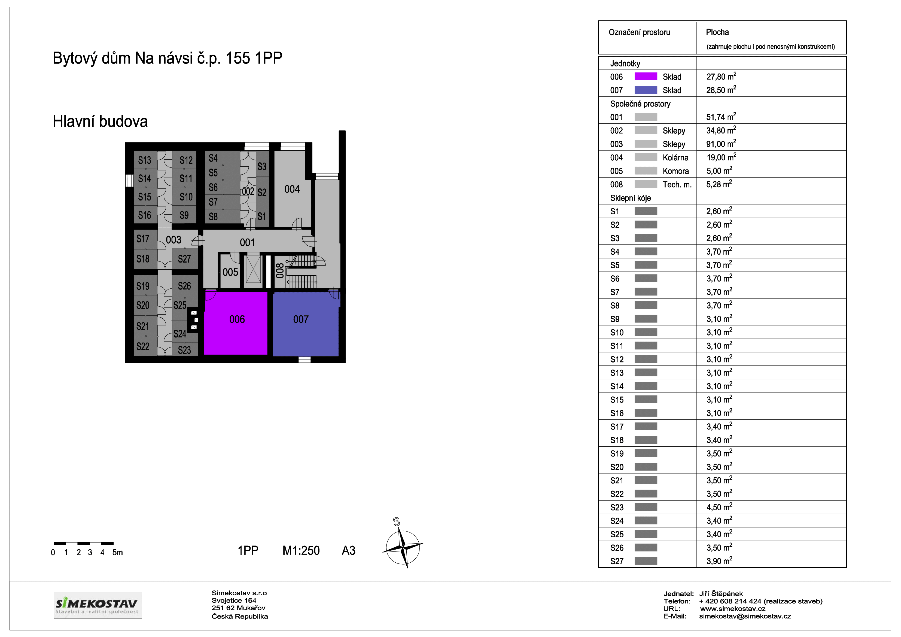
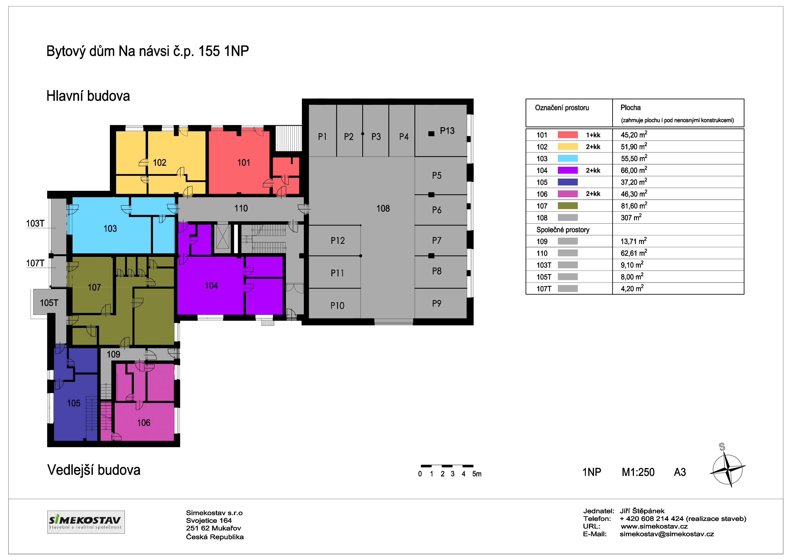
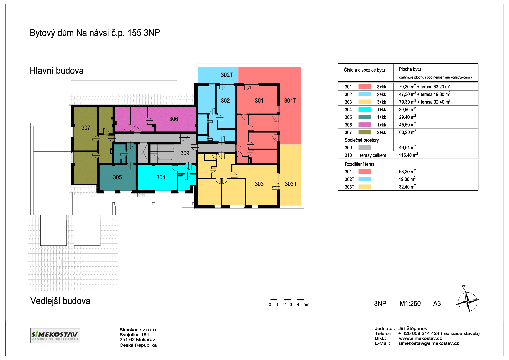
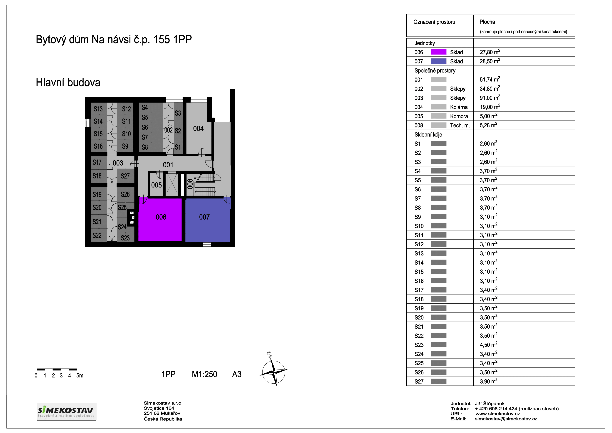
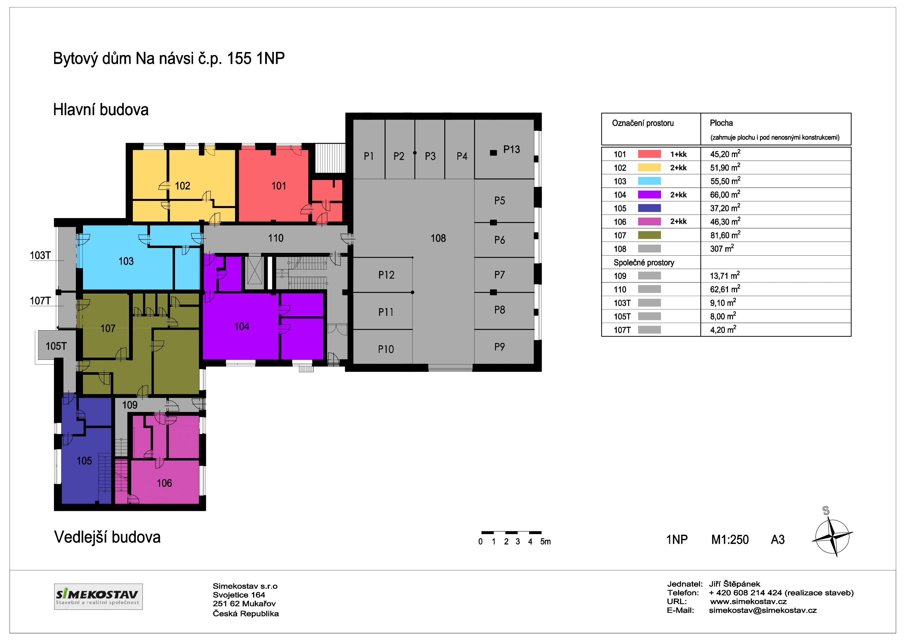
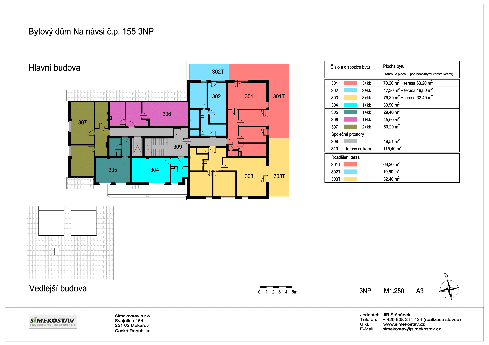

Půdorysy
-
Sklepy
 -
1. patro
Detail prvního patra  -
2. patro
Detail druhého patra
-
3. parto
Detail třetího patra 
Na Svojetické návsi vznikla díky spolupráci obce a soukromé stavební společnosti nová moderní budova, která vkusně zapadá do celkového rázu obce.
Bytový dům vybudovala společnost SIMEKOSTAV s.r.o., která působí již více než 14 let. Za tuto dobu tato firma zrealizovala okolo 200 projektů. Jednalo se především o výstavbu rodinných a bytových domů, ale i komerčních a průmyslových budov. Společnost SIMEKOSTAV, s.r.o. si zakládá na solidním a férovém jednání, vysoké kvalitě práce, používání kvalitních materiálů a moderních technologií. Většinu svých zakázek tato společnost získává především na základě dobrých referencí a doporučení od předchozích spokojených zákazníků.
„Bytový dům Na návsi“ má celkem čtyři podlaží z toho jedno podzemní. Druhé a třetí nadzemní podlaží je částečně podkrovní. Tímto řešením i rozdělením objektu na hlavní budovu se dvěma na sebe kolmými sedlovými střechami a nižší vedlejší budovu s vlastní sedlovou střechou, se architektům společnosti VMS projekt s.r.o., se kterou společnost SIMEKOSTAV spolupracuje již řadu let, podařilo velmi dobře začlenit celý objekt do okolní zástavby.
Nejenom proto, že měl investor na paměti potřeby starších či handicapovaných občanů, je dům vybaven výtahem, pomocí kterého bude bydlení ve druhém i třetím podlaží výrazně pohodlnější pro všechny nové obyvatele domu.
Budoucí majitelé nových bytů nebo jejich nájemci si budou moci vybírat z velikostí od 1 kk již od 32 m2, přes 2 kk až ke 3 kk s obytnou plochou 70, ale i 80 m2 a terasami o velikosti 30 respektive 60 m2. Venkovní terasy má několik dalších i menších bytů. Každý byt má v suterénu vlastní sklep. V suterénu jsou také umístěny společné prostory, jako je kočárkárna, kolárna, sklad a technické zázemí domu. Ve východní části budovy jsou v přízemí garážová stání pro 12 osobních aut a další venkovní parkovací místa jsou vytvořena přímo před budovou.
V přízemí objektu se krom jiného nacházejí dvě budoucí lékařské ordinace s čekárnami a veškerým potřebným zázemím, jak pro lékaře a setry, tak pro pacienty. Tyto dvě ordinace jsou přístupné přímo z obecní návsi, kde jsou i autobusové zastávky a možnost zaparkování. Veškeré prostory umístěné v přízemí jsou samozřejmě bezbariérové, bezbariérové jsou i všechny byty ve střední části hlavní budovy.
Když kupujete byt je důležitá nejen jeho cena, ale i budoucí poplatky spojené s užíváním Vašeho nového bytu.
Příklad měsíčních nákladů pro byt 2kk, o velikosti 50 m2, obsazený dvěma lidmi:
1. Zálohy na odběr pitné vody a likvidaci odpadních vod a odběr elektřiny pro společné prostory:
Dva lidé = 2 x 300,- Kč ( záloha bude pravidelně vyúčtována dle Vaší skutečné spotřeby )
2. Fond oprav a správy § 1180 odst. 1:
50 m2 x 3,- Kč = 150,- Kč ( tyto peníze zůstávají na nutné opravy domu, první dva roky je dům i všechny byty v plné záruce )
3. Příspěvky rozvržené na každou jednotku stejně § 1180 odst. 2:
1 bytová jednotka = 100,- Kč ( toto je odměna za správu domu, vedení účetnictví atd. )
Ke shora uvedeným částkám je nutno připočítat vlastní odběr elektřiny.
Každý byt má v suterénu objektu i svůj vlastní sklep. V suterénu jsou také umístěny společné prostory, jako je kočárkárna, kolárna, sklad a technické zázemí domu.
K bytům máte možnost přikoupit buď vnitřní garážové nebo venkovní parkovací stání.
Všechny byty jsou nabízeny k prodeji zcela dokončené, připravené k okamžitému nastěhování a nejsou investorem zatíženy žádným finančním úvěrem nebo jiným závazkem.
Bytový dům je situován na návsi v obci Svojetice, přímo u autobusové zastávky, v sousedství dětského hřiště a zástavby rodinných domů. Obec Svojetice leží jihovýchodně od Říčan, v okr. Praha-východ. Výhodou této lokality je také velmi dobrá dostupnost dopravního spojení do centra Prahy, které je vzdálené cca 30 km.
V blízkosti bytového domu je nově otevřená moderní mateřská školka. Ve vzdálenosti dvou kilometrů v obci Mukařov je škola, ordinace praktického i zubního lékaře, samoobsluha, obchody, restaurace i veterinární klinika . V okolí Svojetic se rozkládají louky a lesy (NPP Voděradské bučiny), které jsou protkány jak stezkami pro pěší, tak cyklostezkami. Příroda v okolí domu je velmi vhodná k různému sportovnímu vyžití, k pěším procházkám nebo např. houbaření v okolních lesích.
V obci Svojetice v současné době žije téměř 1000 obyvatel.
Sklepy
1. patro
Detail prvního patra 2. patro
Detail druhého patra
3. parto
Detail třetího patra {kind=link}
{kind=link}
{kind=link}